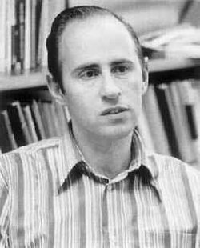

Paul J. Cohen | |
|---|---|
 Paul J. Cohen | |
| Born | April 2, 1934 Long Branch, New Jersey, U.S. |
| Died | March 23, 2007 (aged 72) Stanford, California, U.S. |
| Alma mater | University of Chicago (MS, PhD) |
| Known for | Cohen forcing Continuum hypothesis |
| Awards | Bôcher Prize (1964) Fields Medal (1966) National Medal of Science (1967) |
| Scientific career | |
| Fields | Mathematics |
| Institutions | Stanford University |
| Thesis | Topics in the Theory of Uniqueness of Trigonometrical Series (1958) |
| Antoni Zygmund | |
Doctoral students | Peter Sarnak |
{kind=link}
Paul Joseph Cohen (April 2, 1934 – March 23, 2007) was an American mathematician, best known for his proofs that the continuum hypothesis and the axiom of choice are independent from Zermelo–Fraenkel set theory, for which he was awarded a Fields Medal.[1][2]
Early life and education
Cohen was born in Long Branch, New Jersey in 1934, into a Jewish family that had immigrated to the United States from what is now Poland; he grew up in Brooklyn.[3][4] He graduated in 1950, at age 16, from Stuyvesant High School in New York City.[1][4]
Cohen next studied at Brooklyn College from 1950 to 1953, but he left without earning his bachelor's degree when he learned that he could start his graduate studies at the University of Chicago with just two years of college. At Chicago, Cohen completed his master's degree in mathematics in 1954 and his Doctor of Philosophy degree in 1958, under supervision of Antoni Zygmund. The title of his doctoral thesis was Topics in the Theory of Uniqueness of Trigonometrical Series.[5][6]
In 1957, before the award of his doctorate, Cohen was appointed as an instructor in mathematics at the University of Rochester for a year. He then spent the academic year 1958–59 at the Massachusetts Institute of Technology before spending 1959–61 as a fellow at the Institute for Advanced Study at Princeton. These were years in which Cohen made a number of significant mathematical breakthroughs. In Factorization in group algebras (1959) he showed that any integrable function on a locally compact group is the convolution of two such functions, solving a problem posed by Walter Rudin. In Cohen (1960), he made a significant breakthrough in solving the Littlewood conjecture.[7]
Cohen was a member of the American Academy of Arts and Sciences,[8] the United States National Academy of Sciences,[9] and the American Philosophical Society.[10] On June 2, 1995, Cohen received an honorary doctorate from the Faculty of Science and Technology at Uppsala University, Sweden.[11]
Career
Cohen is noted for developing a mathematical technique called forcing, which he used to prove that neither the continuum hypothesis (CH) nor the axiom of choice can be proved from the standard Zermelo–Fraenkel axioms (ZF) of set theory. In conjunction with the earlier work of Gödel, this showed that both of these statements are logically independent of the ZF axioms: these statements can be neither proved nor disproved from these axioms. In this sense, the continuum hypothesis is undecidable, and it is the most widely known example of a natural statement that is independent from the standard ZF axioms of set theory.
For his result on the continuum hypothesis, Cohen won the Fields Medal in mathematics in 1966, and also the National Medal of Science in 1967.[12] The Fields Medal that Cohen won continues to be the only Fields Medal to be awarded for a work in mathematical logic, as of 2026.
Apart from his work in set theory, Cohen also made many valuable contributions to analysis. He was awarded the Bôcher Memorial Prize in mathematical analysis in 1964 for his paper "On a conjecture by Littlewood and idempotent measures",[13] and lends his name to the Cohen–Hewitt factorization theorem.
Cohen was a full professor of mathematics at Stanford University. He was an Invited Speaker at the ICM in 1962 in Stockholm and in 1966 in Moscow.
Angus MacIntyre of the Queen Mary University of London stated about Cohen: "He was dauntingly clever, and one would have had to be naive or exceptionally altruistic to put one's 'hardest problem' to the Paul I knew in the '60s." He went on to compare Cohen to Kurt Gödel, saying: "Nothing more dramatic than their work has happened in the history of the subject."[14] Gödel himself wrote a letter to Cohen in 1963, a draft of which stated, "Let me repeat that it is really a delight to read your proof of the ind[ependence] of the cont[inuum] hyp[othesis]. I think that in all essential respects you have given the best possible proof & this does not happen frequently. Reading your proof had a similarly pleasant effect on me as seeing a really good play."[15]
Continuum hypothesis
While studying the continuum hypothesis, Cohen is quoted as saying in 1985 that he had "had the feeling that people thought the problem was hopeless, since there was no new way of constructing models of set theory. Indeed, they thought you had to be slightly crazy even to think about the problem."[16]
A point of view which the author [Cohen] feels may eventually come to be accepted is that CH is obviously false. The main reason one accepts the axiom of infinity is probably that we feel it absurd to think that the process of adding only one set at a time can exhaust the entire universe. Similarly with the higher axioms of infinity. Now is the cardinality of the set of countable ordinals, and this is merely a special and the simplest way of generating a higher cardinal. The set [the continuum] is, in contrast, generated by a totally new and more powerful principle, namely the power set axiom. It is unreasonable to expect that any description of a larger cardinal which attempts to build up that cardinal from ideas deriving from the replacement axiom can ever reach .
Thus is greater than , where , etc. This point of view regards as an incredibly rich set given to us by one bold new axiom, which can never be approached by any piecemeal process of construction. Perhaps later generations will see the problem more clearly and express themselves more eloquently.
An "enduring and powerful product" of Cohen's work on the continuum hypothesis, and one that has been used by "countless mathematicians"[16] is known as "forcing", and it is used to construct mathematical models to test a given hypothesis for truth or falsehood.
Shortly before his death, Cohen gave a lecture describing his solution to the problem of the continuum hypothesis at the 2006 Gödel centennial conference in Vienna.[17]
Death
Cohen and his wife, Christina (née Karls), had three sons. Cohen died on March 23, 2007, in Stanford, California, after suffering from lung disease.[18]
Selected publications
- Cohen, Paul Joseph (1958). "Topics in the theory of uniqueness of trigonometrical series" (PDF). Archived from the original (PDF) on 2011-07-25. Retrieved 2010-02-19.
- Cohen, Paul Joseph (1960). "On a conjecture of Littlewood and idempotent measures". Amer. J. Math. 82 (2): 191–212. doi:10.2307/2372731. JSTOR 2372731. MR 0133397.
- Cohen, Paul Joseph (December 1963). "The independence of the continuum hypothesis". Proceedings of the National Academy of Sciences of the United States of America. 50 (6): 1143–1148. Bibcode:1963PNAS...50.1143C. doi:10.1073/pnas.50.6.1143. PMC 221287. PMID 16578557.
- Cohen, Paul Joseph (January 1964). "The independence of the continuum hypothesis, II". Proceedings of the National Academy of Sciences of the United States of America. 51 (1): 105–110. Bibcode:1964PNAS...51..105C. doi:10.1073/pnas.51.1.105. PMC 300611. PMID 16591132.
- Cohen, Paul Joseph (2008) [1966]. Set theory and the continuum hypothesis. Mineola, New York City: Dover Publications. p. 151. ISBN 978-0-486-46921-8.
See also
References
- ^ a b Levy, Dawn (2007-03-28). "Paul Cohen, winner of world's top mathematics prize, dies at 72". Stanford Report. Retrieved 2007-10-31.
- ^ Pearce, Jeremy (2 April 2007). "Paul J. Cohen, Mathematics Trailblazer, Dies at 72". NY Times.
- ^ Macintyre, A.J. "Paul Joseph Cohen" Archived 2010-12-25 at the Wayback Machine, London Mathematical Society. Accessed March 3, 2011. "Cohen's origins were humble. He was born in Long Branch, New Jersey on 2 April 1934, into a Polish immigrant family."
- ^ a b Albers, Donald J.; Alexanderson, Gerald L.; Reid, Constance, eds. (1990), "Paul Cohen", More Mathematical People, Harcourt Brace Jovanovich, pp. 42–58.
- ^ Cohen 1958.
- ^ "Topics in the Theory of Uniqueness of Trigonometrical Series". ProQuest. Retrieved 2024-11-02.
- ^ O'Connor, John J.; Robertson, Edmund F., "Paul Joseph Cohen", MacTutor History of Mathematics Archive, University of St Andrews
- ^ "Paul Joseph Cohen". American Academy of Arts & Sciences. Retrieved 2022-08-22.
- ^ "Paul J. Cohen". www.nasonline.org. Retrieved 2022-08-22.
- ^ "APS Member History". search.amphilsoc.org. Retrieved 2022-08-22.
- ^ "Honorary doctorates - Uppsala University, Sweden". www.uu.se. Retrieved 21 March 2018.
- ^ "The President's National Medal of Science: Recipient Details - NSF - National Science Foundation". www.nsf.gov. Retrieved 21 March 2018.
- ^ Cohen 1960.
- ^ Davidson, Keay (2007-03-30). "Paul Cohen -- Stanford professor, acclaimed mathematician". San Francisco Chronicle. Archived from the original on October 17, 2007. Retrieved 2007-10-31.
- ^ Solomon Feferman, The Gödel Editorial Project: A synopsis [1] p. 11.
- ^ a b Pearce, Jeremy (2007-04-02). "Paul J. Cohen, Mathematics Trailblazer, Dies at 72". The New York Times. Retrieved 2007-10-31.
- ^ Paul Cohen lecture video, six parts, Gödel Centennial, Vienna 2006 on YouTube
- ^ Pearce, Jeremy (2007-04-02). "Paul J. Cohen, Mathematics Trailblazer, Dies at 72". The New York Times. ISSN 0362-4331. Retrieved 2020-06-13.
Further reading
- Akihiro Kanamori, "Cohen and Set Theory", The Bulletin of Symbolic Logic, Volume 14, Number 3, Sept. 2008.
- Sarnak, Peter (December 2007). "Remembering Paul Cohen" (PDF). MAA Focus. 27 (9). Washington, DC: Mathematical Association of America: 21–22. ISSN 0731-2040. Retrieved 2009-05-31.
External links
- O'Connor, John J.; Robertson, Edmund F., "Paul Joseph Cohen", MacTutor History of Mathematics Archive, University of St Andrews
- Paul Joseph Cohen at the Mathematics Genealogy Project
- paulcohen.org - a commemorative website celebrating the life of Paul Cohen
- Stanford obituary